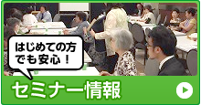

相続登記｜相続・遺言手続トータルサポート大阪
相続・遺言トータルサポート大阪TOP
＞
相続手続きについて
＞ 相続登記
相続登記
まずはお気軽にお問い合わせ下さい！
相続手続きについて
相続手続きの流れ
相続手続きの種類
遺産相続について
相続不動産の名義変更
相続登記
相続税診断
2015年相続税改正

〒564-0028
吹田市昭和町1番1号
アイワステーションビル２F
TEL：0120-13-7838
ご相談事例紹介
よくあるご質問
事務所紹介
提携専門家の紹介
用語辞典
相続登記
相続不動産の名義変更
相続放棄
遺産相続について
相続手続きの種類
相続手続きの流れ
遺言のすすめ
遺言でできること
遺言書の種類
遺言チェックリスト
遺言書 書式集
ご相談の流れ
お客様の声
事例紹介
よくある質問